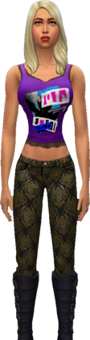
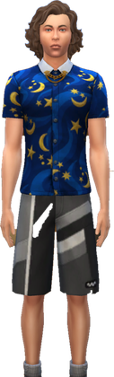
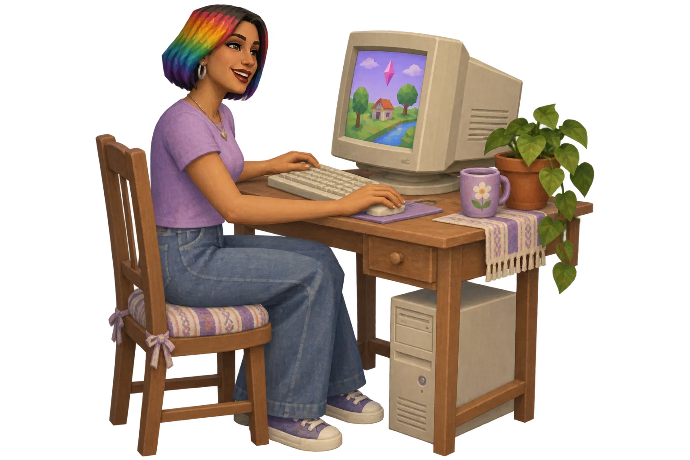
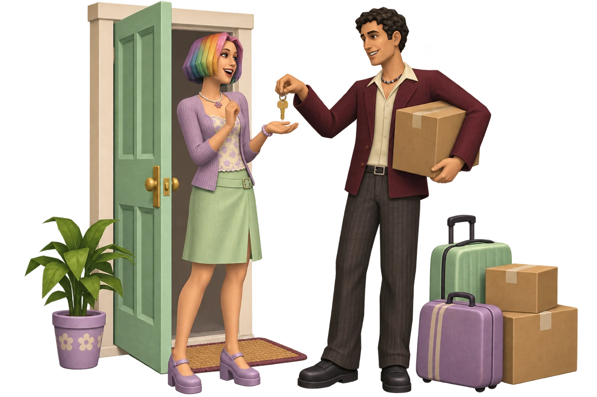
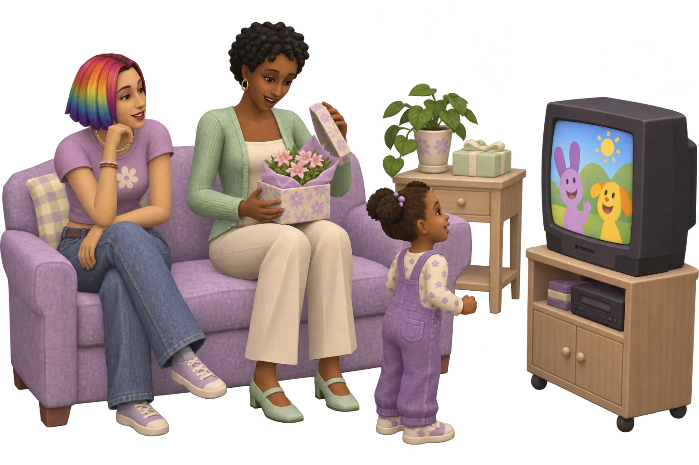
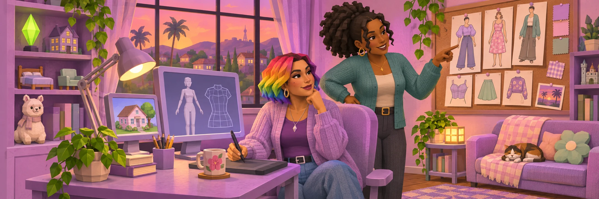

JinJinJenn · The Sims & a little imagination
A little more life,
a lot more personality.
I’m Jenn. I make Sims mods, create characters and follow the ideas that keep me up a little too late.
Featured project · MoveAnywhere · In testing

A park can become
your next home.
Move your household into a park through Manage Worlds, then settle in with the normal build catalog and your own household funds.
A park, before and after.
Compare the lot type, build catalog and household funds after moving in through Manage Worlds.

A home you can edit
The lot becomes Residential instead of staying locked as a Park.
Your household’s funds
Build with the family’s money rather than an empty business wallet.
The usual build catalog
Choose from normal build items, not just the limited Park Items list.
Made for The Sims 4
The little changes
I’m working on.
MoveAnywhere
Take a closer look at the move-in project and its game captures.
Explore the projectLove Notes
Turn a line from a text file into a sweet in-game note.
Explore the projectSurprise Gifts
Flowers, cupcakes or a plush can turn up in your Sim’s inventory.
Explore the project
Thinking of You
A warm moodlet brings a little affection to an ordinary day.
Explore the projectToasts
Mark birthdays and anniversaries on the real dates you choose.
Explore the project
Gentle Hearts
Steady happy moodlets help kids and teens through rough days.
Explore the project
Toddler TV
The TV switches to the kids’ channel for toddlers, then turns itself off.
Explore the projectCharacter illustrations introduce the projects. Open a project for its in-game captures and current status.
Captured in The Sims 4
Meet the household.

Magenta & charcoal
This Sim has long dark braids and wears a grey vest with magenta trousers.


A little purple attitude
This Sim has blonde hair and wears a purple graphic tank top with patterned trousers and boots.


Moonlight, dressed down
This Sim has wavy brown hair and wears a blue moon-and-stars shirt with striped shorts.

From the workbench
What I’ve been making.

Every computer is a good computer
Giving even the cheapest computer the gaming-skill and hacking-money upgrades, without changing tournament payouts.

Two more ways to move in
Moving from inside the game brings a few surprises, especially when another household already lives in the home you want.

Two mods that quietly did nothing
Gifts weren't arriving and toddlers couldn't turn on the TV. Here's what was getting in the way and how we fixed it.

In the studio
Meet Jenn.
I’m creating characters and exploring new clothing ideas alongside my Sims mods.
Come into my studio →